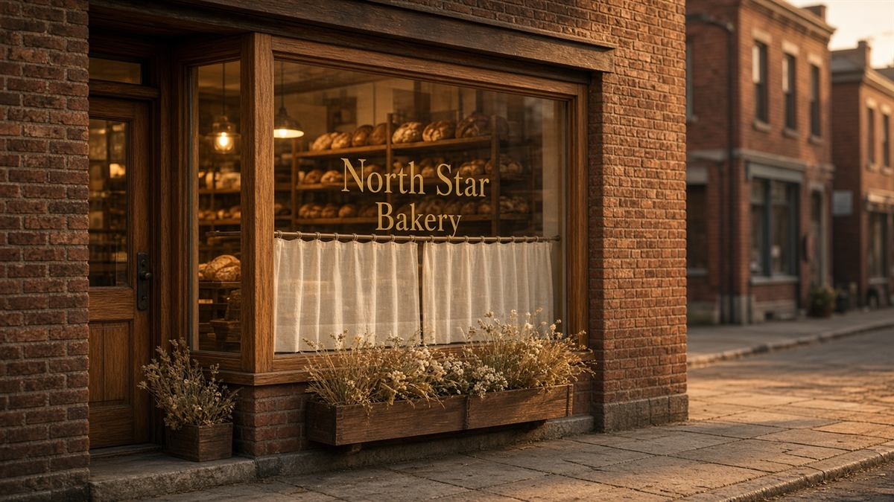
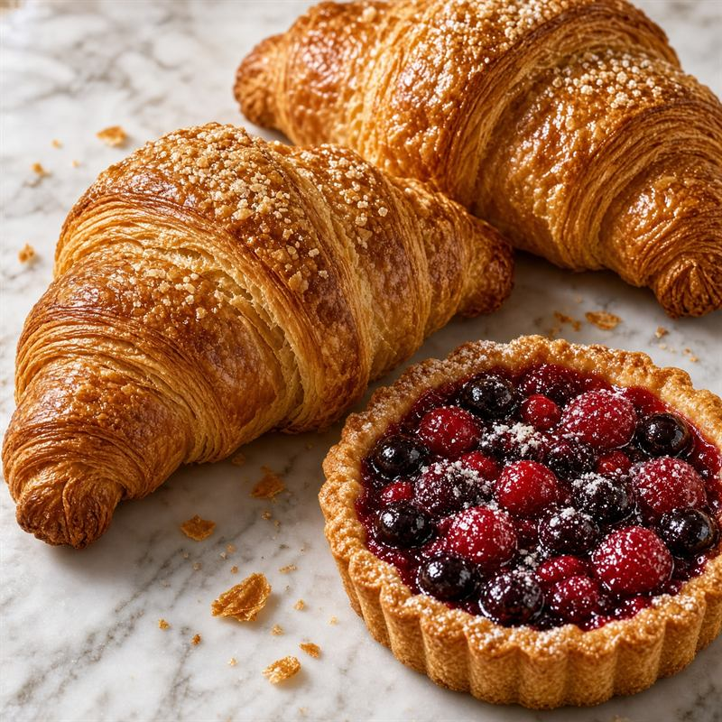

Neighborhood bakery · Riverbend, MN
Welcome to North Star Bakery
A neighborhood bakery for local customers, commuters, families, and anyone planning a table worth gathering around. We mill, mix, and bake by hand so you can take home bread that still smells like the oven.

What we are known for
Naturally leavened breads
Overnight country loaves, seeded rye, and baguettes mixed in small batches.
Seasonal pastries
Butter-laminated croissants, morning buns, and fruit tarts that follow the market.
Celebration cakes
Layer cakes for birthdays, showers, and the quiet Tuesday that still deserves dessert.
Featured item of the week
Mixed berry tart
A crisp butter shell filled with raspberries and blueberries cooked down with a little lemon, finished with a dusting of sugar. Pair it with a butter croissant laminated by hand that morning. Available Wednesday through Sunday, while it lasts.

A short welcome
Press play for a greeting from the shop.
Hours and location
18 Lark StreetRiverbend, MN 55401
- Tuesday – Friday 7:00 a.m. – 6:00 p.m.
- Saturday 8:00 a.m. – 4:00 p.m.
- Sunday 8:00 a.m. – 1:00 p.m.
- Monday Closed